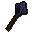
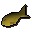

Otherworldly being
| Config name | otherworldly_being |
| NPC id | 126 |
| Combat level | 64 |
| Hitpoints | 66 |
| Attack / Strength / Defence | 56 / 56 / 46 |
| Respawn | 40 ticks |
| Options | Attack |
| Wander range | 3 tiles from spawn |
| Max range | 5 tiles from spawn |
| Defined in | scripts/_unpack/225/all.npc |
| Bonuses | Stab def 15, Slash def 10, Crush def 20, Magic def -5, Range def 15 |
Otherworldly being
Is he invisible or just a set of floating clothing?
Show all 6 spawns on the world map → Open in knowledge graph →
Drops
Drop script: scripts/drop tables/scripts/otherworldly_being.rs2 (specific handler)
Drop table
| Item | Quantity | Rarity | Notes |
|---|---|---|---|
| 15 | 59/128 (46.09%) | ||
| Herb drop table table | see table | 5/64 (7.81%) | |
| 5 | 9/128 (7.03%) | ||
| 4 | 1/16 (6.25%) | ||
| 2 | 7/128 (5.47%) | ||
| 2 | 5/128 (3.91%) | ||
| 2 | 1/32 (3.12%) | ||
| Gem drop table table | see table | 3/128 (2.34%) | |
| 1 | 1/64 (1.56%) | ||
| 2 | 1/128 (0.78%) | ||
 Mithril mace | 1 | 1/128 (0.78%) | |
 Mackerel | 1 | 1/128 (0.78%) |
Locations
| Area | Coordinates | Level | Count | Map |
|---|---|---|---|---|
| Wizards' Tower (underground) | 3149, 9545 | 0 | 1 | view |
| Wizards' Tower (underground) | 3150, 9541 | 0 | 1 | view |
| Wizards' Tower (underground) | 3150, 9549 | 0 | 1 | view |
| Wizards' Tower (underground) | 3154, 9539 | 0 | 1 | view |
| Wizards' Tower (underground) | 3156, 9548 | 0 | 1 | view |
| Wizards' Tower (underground) | 3157, 9542 | 0 | 1 | view |
Referenced in scripts
scripts/drop tables/scripts/otherworldly_being.rs2